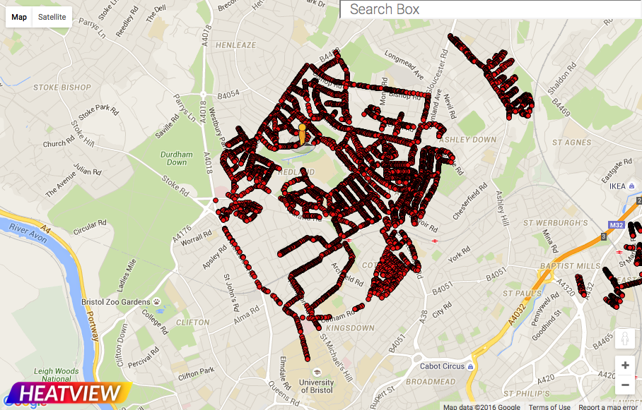
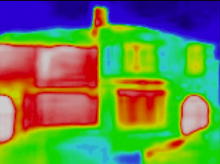

The CHEESE Project aims to reduce domestic energy losses, at low cost, by up to a third. This saves money, improves health and wellbeing and, reduces our carbon emissions.
Most of the buildings in which we live are thermally inefficient. Much of the energy we use to heat them escapes, providing little benefit, and costing us money. Domestic energy consumption accounts for approximately one third of UK energy demand and, also for the largest peaks in demand. One study has shown that we need to reduce domestic demand by 57% if we are to transition to a decarbonised energy system and reduce global warming to an 'acceptable' 2C. By reducing the energy we waste in our homes we can make a positive contribution to reducing global warming.
The aim of the CHEESE Project is to reduce domestic heat losses. We do this by performing detailed surveys of homes using low-cost thermal imaging equipment to identify areas where simple but effective remedial action can be taken. It is estimated that 30% of heating losses are due to drafts, which can be fixed cheaply and easily. By recording 'before and after' energy consumption, the impact of our surveys can be verified.
We have been carrying out surveys of Bristol streets to encourage householders to request an internal survey. This uses the effective principle of seeing is believing. All of the images are available on the Heatview.co.uk website, where you can browse the map and find your own house (as long as it is in one of our pilot areas).
 Our internal surveys are based on a unique methodology developed by Brian Harper, who has been working with thermal imaging for 45 years and has surveyed over 400 homes. The method involves heating the house to 10 degrees above ambient temperature, reducing the indoor pressure and locating incoming cold draughts, inadequate insulation, poor construction, etc.
The householder observes the survey and is informed of any energy-loss problems as they are revealed. The survey is also filmed, capturing the live thermal images and commentary from the surveyor, to provide to the householder for future reference.
If you would like to apply for a survey of your home, then please get in touch by emailing surveys@cheeseproject.co.uk
The CHEESE pilot project was setup in March 2015 with funding from Bristol Green Capital 2015. Two initial small grants of £5,000 were awarded to Easton Energy Group and Ambition Lawrence Weston . A further two grants were awarded to the Bishopston, Cotham and Redland Neighbourhood Partnership of £2,000 and £1,610.